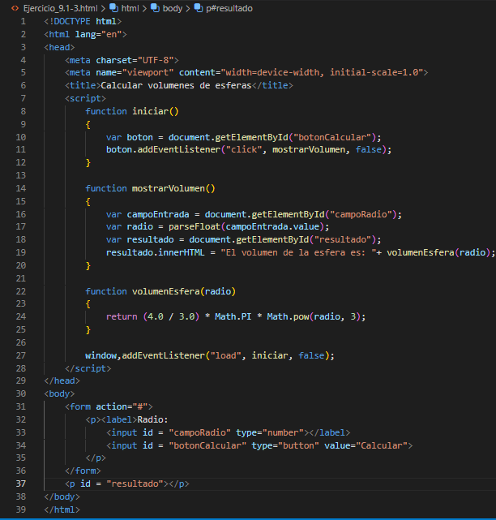

Ejercicios de autoevaluación
Complete las siguintes oraciones:
- Los modulos de programa en JavaScript se llama funciones
- Una función se invoca mediante el uso de un(a) llamada a función
- Una variable que se conoce sólo dentro de la función en la que se define se llama variable local
- La intrucción return en una función invocada puede usarse para pasar el valor de una expresió
a la función que hizo la llamada
- La palabra clave function indica el comienzo de la definición de una función
Para el programa de la siguiente figura, indique el alcance (ya sea alcance global o de funcion) de cada uno de los 3 elementos:
- La variable x -----> alcance global
- La variable y -----> alcance de funcion
- La funcion cubo -----> alcance global
- La funcion salida ------> alcance global
Complete las siguientes oraciones:
- Las funciones por el programador, variables globales y funciones globales de JavaScript son todas partes del objeto Global
- La funcion isNan determina si su argumento es un numero o no
- La funcion escape recibe un argumento de cadena y devuelve una cadena en la que todos los espacios, puntuacion,
caracteres de acentuacion y cualquier otro caracter que no este en el conjunto ASCII se
condifican en un formato hexadecimal
- La funcion eval recibe un argumento es la parte del programa en donde puede usarse
- La funcion unescape recibe una cadena como su argumento y devuelve una cadena en donde se decodifican
todos los caracteres que se codificaron antes con escape
Complete las siguientes oraciones:
- El alcance de un identificador es la parte del programa en donde puede usarse
- Las tres formas de devolver el control de una funcion invocada al que la llamo son: return; o return expresion; o encontrar la llave derecha de cierre a una funcion
- La funcion Math.random se utiliza para producir numeros aleatorios
- La funcion local recibe una cadena como su argumento y devuelve una cadena en donde se decodifican
todos los caracteres que se codificaron antes con escape
Localice el error en cada uno de los siguientes segmentos de programa y explique como corregirlo
-
method g ()
{
document.writeln("Dentro del metodo g");
}
R= ERROR: method no es la palabra clave que se utiliza para comenzar la definicion de una funcuion
Correccion: Cambiar method por function
-
function suma(x, y)
{
var resultado;
resultado = x + y;
}
R= ERROR: se supone que la funcion debe devolver un valor, pero no es asi
Correccion: eliminar la variable resultado y colocar la instruccion
return x + y;
en la funcion o agregar la siguinte instruccion al final del cuerpo de la funcion:
return resultado;
-
function f(a)
{
document.writln(a);
}
R= ERROR: el punto y coma despues del parentesis derecho que encierra la lista de parametros
Correccion: elimine el punto y coma despues del parentesis derecho de la lista de parametros
Escriba un programa de JavaScript completo para pedir al usuario el radio de una esfera y luego llame a la funcion
volumenEsfera para calcular y mostrar el volumen de la esfera. Use la instruccion:
volumen = (4.0 / 3.0) * Math.PI * Math.pow(radio, 3);
para calcular el volumen. El usuario debe introducir el radio en el elemento input de HTML del tipo "number" en
un elemento form. Proporcione el elemento input el valor de is "campoEntrada". Puede usar este id con el metodo
getElementaryById del objeto document para obtener el documento a usar en la secuencia de comandos. Para acceder
a la cadena en campoEntrada, use la propiedad value como en campoEntrada.value y luego convierta la cadena en
numero, usando parseFloat. Use un elemento input de tipo "button" en el elemento form para que el usuario
pueda iniciar el calculo.
Respuesta: Ejercicio_9.1-3
